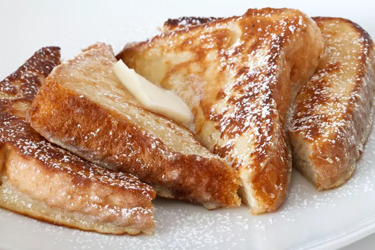

Pain Perdu

Le pain perdu est une recette traditionnelle qui permet de ne pas jeter le pain sec.
Recette du Pain Perdu
Ingrédients:
- Du pain
- du lait
- deux oeufs
- du sucre
Mode opératoire:
- Sucrer le lait
- Faire tremper le pain dans le lait afin qu'il s'imbibe.
- Tremper ensuite le pain dans les oeufs battus grossièrement.
- Faire revenir la tranche de pain dans une poêle beurrée jusqu'à ce qu'elle soit bien dorée.
- Servir chaud ou tiède et nappé de sucre, miel, confiture ou pâte à tartiner.
Brutal.
Retour